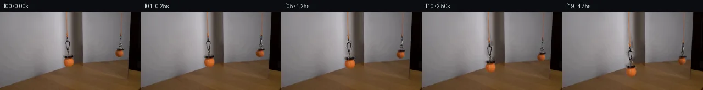

![首帧]()

Round 00
2026-11-05T12:11:06.648699+00:00像素候选变化代码 +154/−0inspection 更新
pixels 2d463b93ad4a9d03 · code 6e6aeef5c34982a6
查看本轮 generate.py 真实 diff
--- previous/generate.py
+++ current/generate.py
@@ -0,0 +1,154 @@
+"""Local image sprites, background inpainting, and subpixel rope extension.
+No external assets, learned model, 3D engine, or network are used.
+"""
+from pathlib import Path
+import json
+import numpy as np
+import cv2
+from PIL import Image, ImageDraw, ImageFilter
+from scipy.ndimage import distance_transform_edt
+from artifact_io import save
+
+ROOT = Path(__file__).resolve().parent
+TMP = ROOT / '.tmp'
+TMP.mkdir(exist_ok=True)
+SOURCE = np.asarray(Image.open(ROOT / 'first_frame.png').convert('RGB'))
+H, W = SOURCE.shape[:2]
+SCALE = 8
+
+def polygon_mask(points):
+ im = Image.new('L', (W*SCALE, H*SCALE))
+ dr = ImageDraw.Draw(im)
+ dr.polygon([(round(x*SCALE),round(y*SCALE)) for x,y in points],fill=255)
+ im = im.resize((W,H),Image.Resampling.LANCZOS)
+ return np.asarray(im).astype(np.float32)/255
+
+# Silhouettes include original camera blur. The two sprite regions are independent.
+front_pts = [(121,38.5),(124.5,38.5),(125,44.5),(124.7,51.5),
+ (128.1,54.3),(128.7,57.5),(126.9,65.2),(126.2,69.2),(127.1,73.5),
+ (126.3,79),(133.5,79.2),(134.6,81.5),(134,85.5),(132,86.4),
+ (135,91),(134.6,96.7),(130.7,100.5),(125.5,102.3),(120.1,100.6),
+ (116.1,97.1),(114.7,91.9),(116.4,87),(118.4,85.6),(115.1,85.5),
+ (114.4,81.5),(115.3,79.9),(122,79.9),(122.1,75.8),(122.2,70.5),
+ (120.4,65),(119,60.5),(118.6,56),(120.2,53.1),(122,51.8),(121.3,46)]
+reflect_pts = [(218.2,39.2),(221.5,39.2),(222,44),(221.9,51.8),
+ (220.8,57.2),(222.5,59.3),(223,62.2),(222,64),(219.9,65.3),
+ (220.1,67),(225.1,66.7),(226,68.3),(225.2,71.1),(223.1,71.3),
+ (224.7,74.1),(225,77.7),(222.4,81.7),(218.6,83.4),(214.5,82.8),
+ (211.1,80.1),(209.7,76.3),(210.8,72.9),(212.2,71.3),(210,71.6),
+ (209.7,67.5),(214.8,67),(217.5,67),(217.4,65.2),(215.4,64.6),
+ (214.6,62.4),(215.1,60),(217.1,58.8),(217.7,55.1),(217.5,48),
+ (218.1,44.3)]
+front = polygon_mask(front_pts)
+reflected = polygon_mask(reflect_pts)
+front_rope = polygon_mask([(118.9,-1),(121.2,-1),(124,39.9),(121.6,40.4)])
+reflected_rope = polygon_mask([(221.8,-1),(224,-1),(221.5,40.4),(219,40.4)])
+
+# Recover only narrow moving silhouettes from the original image. A reflection
+# background is estimated separately and does not cross the mirror boundary.
+all_mask = np.maximum.reduce([front,reflected,front_rope,reflected_rope])
+support = (all_mask > .015).astype(np.uint8)
+inpaint_mask = cv2.dilate(support,np.ones((3,3),np.uint8),iterations=1)
+background = cv2.inpaint(SOURCE, inpaint_mask*255, 4, cv2.INPAINT_TELEA).astype(np.float32)
+# A horizontal interpolation has a cleaner wall gradient along the slender cords.
+for rope, xlo, xhi in [(front_rope,117,126),(reflected_rope,216,226)]:
+ for y in range(40):
+ for x in range(xlo+1,xhi):
+ if inpaint_mask[y,x] and rope[y,x]>.001:
+ f=(x-xlo)/(xhi-xlo)
+ background[y,x]=(1-f)*SOURCE[y,xlo]+f*SOURCE[y,xhi]
+# Restrict changes to the source silhouette so compositing at zero displacement
+# is algebraically equal to the original reference, including soft edges.
+background = np.where((all_mask>.001)[...,None],background,SOURCE.astype(np.float32))
+
+
+def make_layer(region):
+ domain=region>.001
+ residual=SOURCE.astype(np.float32)-background
+ contrast=np.linalg.norm(residual,axis=2)
+ # Strong-contrast interior pixels supply the foreground color for matting.
+ orange=(SOURCE[:,:,0].astype(float)-SOURCE[:,:,2])>60
+ binary=domain & (contrast>25)
+ core=cv2.erode(binary.astype(np.uint8),np.ones((3,3),np.uint8)).astype(bool)
+ core |= domain & ((contrast>90) | orange)
+ if not core.any():
+ core=domain & (contrast>15)
+ inds=distance_transform_edt(~core,return_distances=False,return_indices=True)
+ nearest=SOURCE[inds[0],inds[1]].astype(np.float32)
+ direction=nearest-background
+ alpha=np.sum(residual*direction,axis=2)/(np.sum(direction*direction,axis=2)+1e-5)
+ alpha=np.clip(alpha,0,1)
+ alpha[core]=1
+ alpha[~domain]=0
+ # Exact premultiplication with the reconstructed local background prevents
+ # gray source edges from traveling onto the brown tabletop as solid halos.
+ premult=SOURCE.astype(np.float32)-(1-alpha[...,None])*background
+ premult[~domain]=0
+ return alpha.astype(np.float32),premult.astype(np.float32)
… diff truncated; 67 more lines …